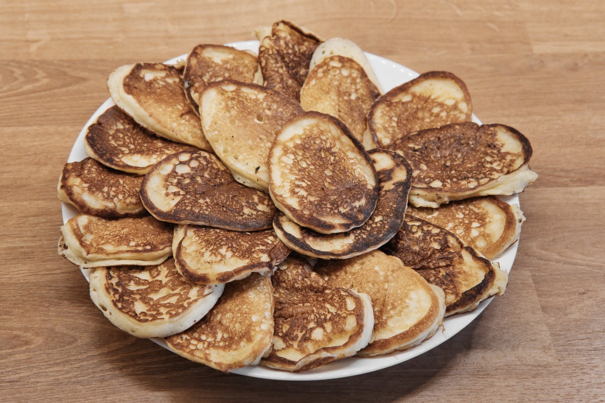
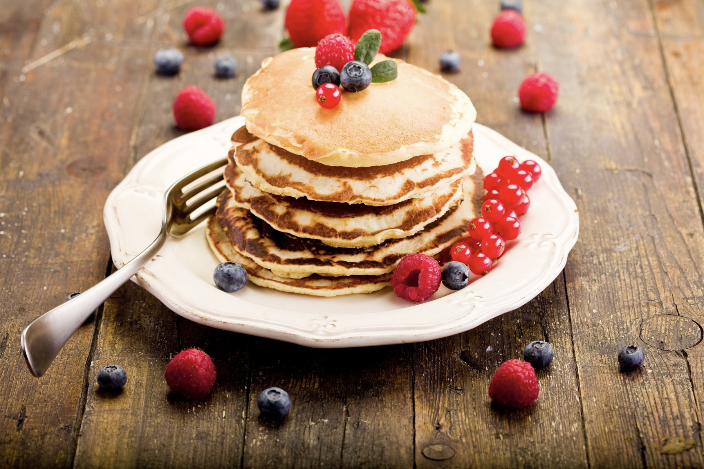
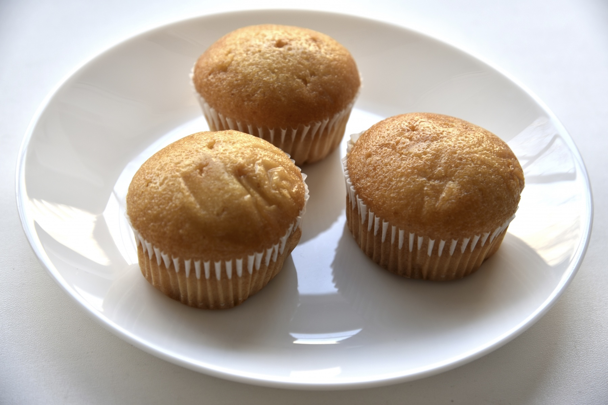
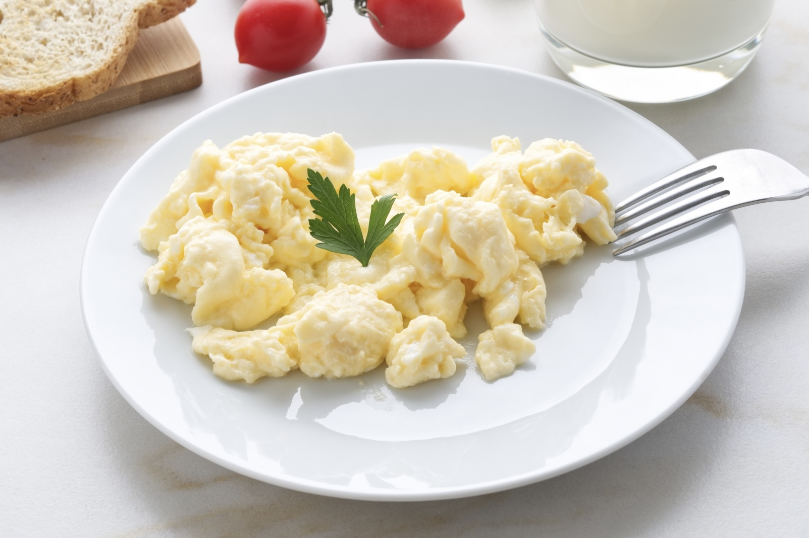
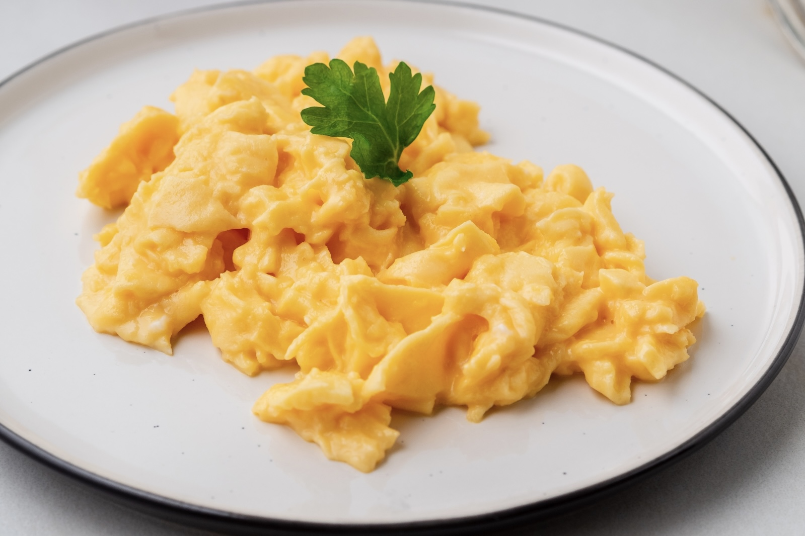
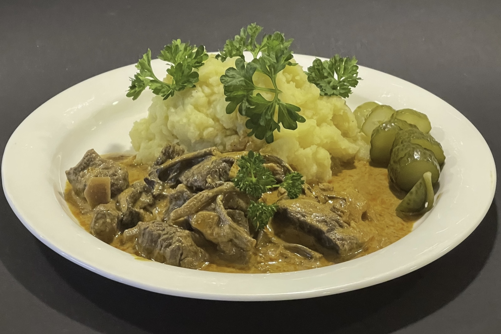
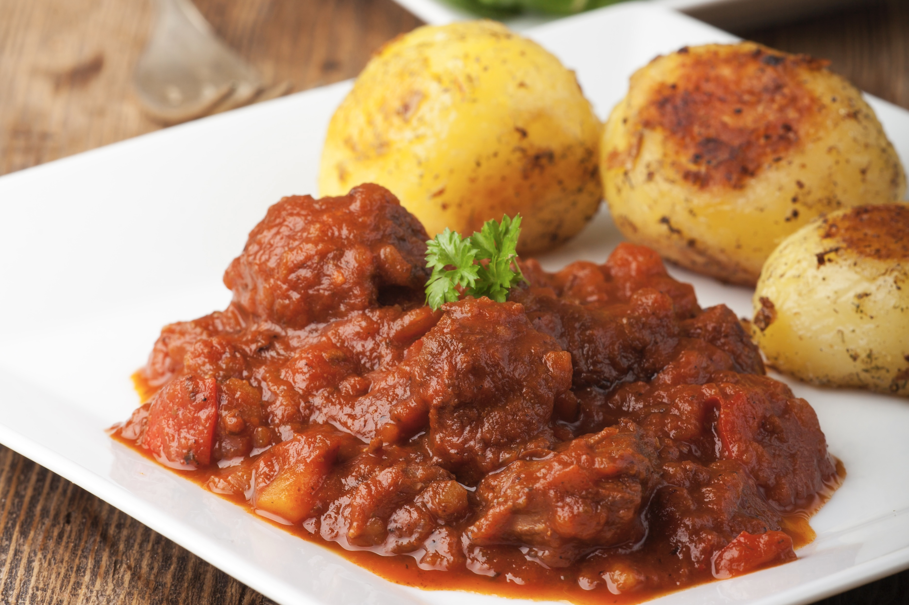
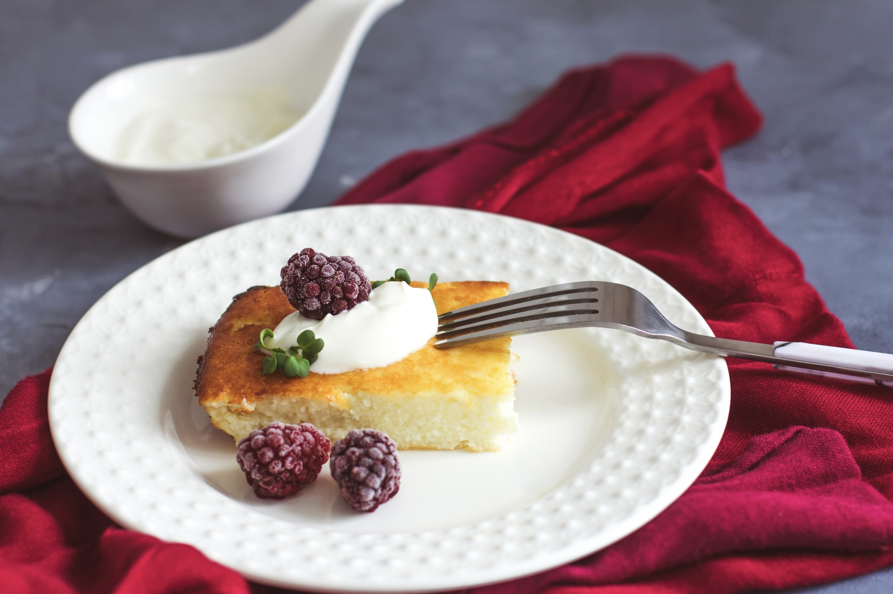
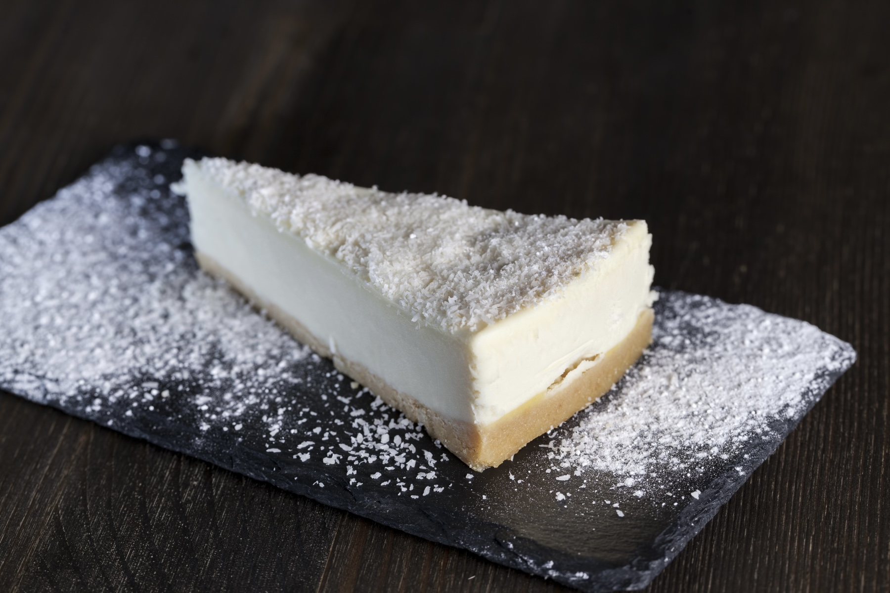
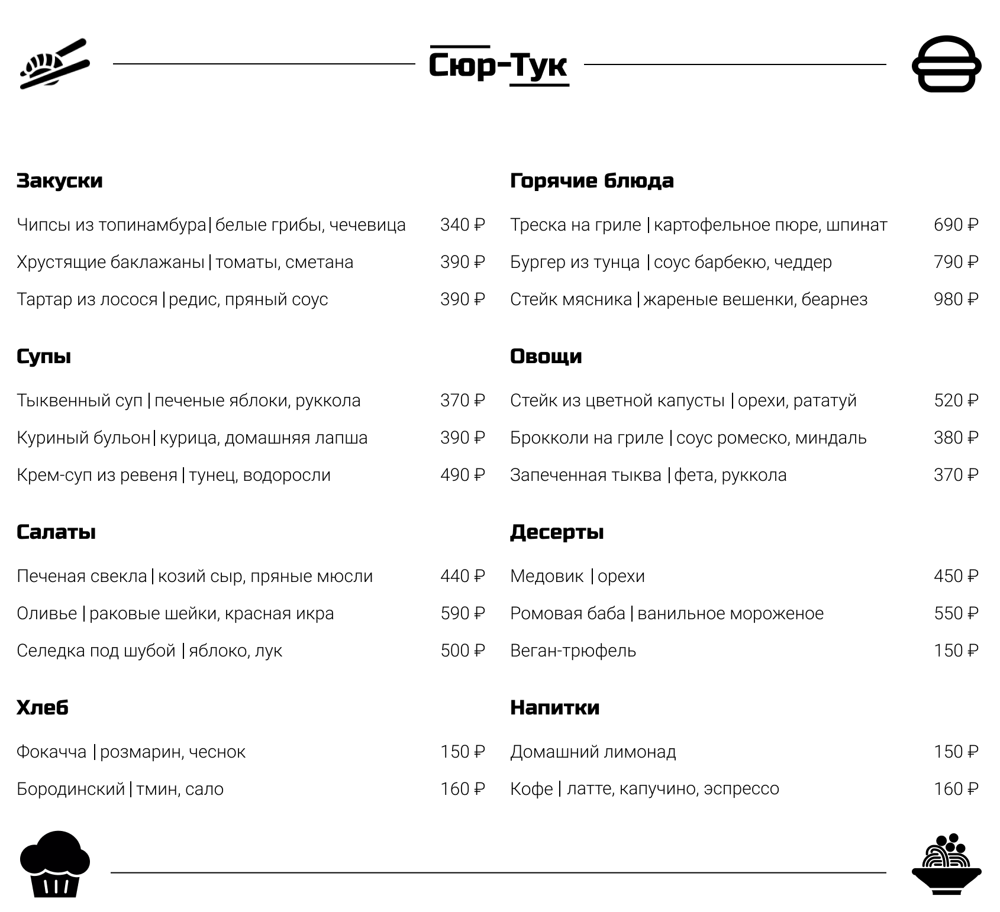

Конструкции урока:
| ID | Construction | Illustration |
|---|---|---|
| 107 | дело Cop не в NP-Loc (, а в NP-Loc) | Дело не в опозданиях. |
| 687 | (а) насчёт NP-Gen – Cl | А насчёт папы – он уехал на рыбалку. |
| 64 | вот и Predicative! | Вот и чудесно! |
| 2311 | Cl, и на том спасибо | Не обижают, и на том спасибо. |
| 1174 | NP типа NP-Gen | дом типа хижины |
Cop = copula verb быть (связочный глагол быть)
NP = noun phrase (существительное)
Loc = Locative case (локатив)
Gen = Genitive case (генитив)
Cl = clause, sentence (предложение)
Pred = predicative (предикатив, то есть прилагательное в краткой форме)
Русский конструктикон https://constructicon.github.io/russian/
а.
Я очень редко готовлю по интересным рецептам. Дело не в том, что я не люблю готовить, а в том, что у меня нет на это времени.
Обычно я делаю что-то простое типа каши или спагетти с сыром. Поел что-то горячее, и на том спасибо. А насчёт рецептов — пробую их,
когда ко мне приходят гости. Они всегда говорят, что я готовлю вкусные и необычные блюда. Вот и отлично!
б.
Вчера я был в гостях у коллеги по работе. У них дома подавали* на ужин какое-то овощное блюдо типа рататуя. Я не смог это есть! Дело не в рецепте, а во вкусе этого блюда.
Они добавили очень много соли. Еда не подгорела*, и на том спасибо. Я ушёл голодным. А насчёт хозяев дома, так они в целом милые люди, но готовить не умеют.
*подавать — English: serve; Norwegian: servere
*подгоревшая курица — English: burnt chicken; Norwegian: brent kylling
| 1. Соня опять пересолила* суп. 2. Паша снова съел шоколадку вместо ужина. 3. Я выпил(а) уже 3 кружки кофе за утро. 4. У моего брата сильная аллергия на цитрусовые. 5. Муж опять забыл убрать молоко в холодильник, и оно испортилось. |
а. Что-то поел. б. Никто это молоко не выпил. в. Со сметаной есть можно. г. Не пиво. д. Он может есть остальные фрукты. |
*пересолить — English: to put too much salt; Norwegian:
Образец:
Сначала я заказала оладьи. Это что-то типа панкейков. Затем я попробовала...
|  Оладьи |
 Панкейки (в английском pancakes) |
1.
|  Кексы |
 Маффины (в английском muffins) |
2.
|  Яичница болтунья |
 Яичный скрэмбл (в английском scrambled eggs) |
3.
|  Бефстроганов |
 Гуляш (в венгерском gulyás) |
4.
|  Творожная запеканка |
 Чизкейк (в английском сheesecake) |
Образец:
— Ждём вас на обед к двум. Придёте?
— Да.
— _____________________(чудесный)!
Ответ: Вот и чудесно!
а.
— Будешь чай?
— Да.
— _____________________(отличный)!
б.
— Как вам ужин?
— Ужин нам очнь понравился!
— _____________________(замечательный)!
в.
— У вас есть клубника?
— Да.
— _____________________(прекрасный)!
Образец:
— А насчёт горячего — что мы будем готовить?
— Я хочу лазанью. А ты?
— Я тоже.
— Вот и чудесно!
| А насчёт + NP-Gen | закуски суп горячее гарнир десерт |
— что мы будем готовить? |
| Вот и | славно отлично хорошо замечательно чудесно прекрасно |
|
Образец:
Вы услышали:
— Ой, мне звонят! Надо идти! А насчёт ужина — скажи, сможешь ли ты прийти в гости в пятницу.
Разговор до этого:
Тема: Друзья говорили об ужине, планировали собраться на ужин.
— Давай в конце недели поужинаем у меня, заодно поиграем в настольные игры.
— Отличная идея! Правда, я пока не знаю, будет ли у меня время.
а.
Вы услышали:
— Хорошо, я подумаю об этом. Насчёт рецепта пирогов — спроси у бабушки, как она их печёт.
Разговор до этого:
________________________________________
б.
Вы услышали:
— Вот это да! Хорошо, я никому не расскажу. А насчёт кофе — ты пробовал по утрам пить зелёный чай вместо него? Может, будешь лучше спать.
Разговор до этого:
________________________________________
в.
Вы услышали:
— Хорошо, тогда приготовлю для тебя ужин без мяса. А насчёт десерта — он будет из фруктов, не переживай.
Разговор до этого:
________________________________________
Образец:
Заметки:
Запечённое мясо: Не специи -> Мясо (несвежее).
—>
Запечённое мясо плохо получилось. И дело не в специях, а в мясе. Оно было несвежее.
а.
Яблочный пирог: Не мукa -> Время приготовления. Пирог не пропёкся.
мукa — English: flour; Norwegian: mel
время приготовления — English: cooking time; Norwegian: tiden brukt til å bake eplekake
б.
Блины: Не тесто -> масло, слишком много
тесто — English: dough; Norwegian: deig
масло — English: butter; Norwegian: smør
в.
Шоколадный торт: Не сливки для крема -> Сахар. Нужна сахарная пудра.
сливки — English: dairy cream; Norwegian: fløte
г.
Эспрессо: Не сорт кофе -> обжарка, слишком светлая
обжарка — English: roast (about coffee); Norwegian: kaffebrenning (brenningsgrad når det gjelder kaffe)
д.
Овощной салат: Не овощи -> оливковое масло, слишком старое
оливковое масло — English: olive oil; Norwegian: olivenolje
Образец:
— Яйца не вредные. Почему ты не хочешь их готовить? (вредный — вред)
— У меня на них аллергия.
—>
— А насчёт яиц, они не вредные. Почему ты не хочешь их готовить?
— Дело не во вреде, а в том, что у меня на них аллергия.
а.
— Рецепт блинов очень простой, нужно просто смешать все ингредиенты. Почему ты не хочешь их готовить?
— Я не умею их жарить.
—>
— А насчёт , . Почему ты не хочешь их готовить?
— Дело не в , а в том, что .
б.
— Баклажаны очень вкусные. Почему ты не хочешь их готовить? (вкусный — вкус)
— Сейчас баклажанов нет в магазине.
—>
— А насчёт , . Почему ты не хочешь их готовить?
— Дело не во , а в том, что .
в.
— Чтобы испечь этот пирог, нужно потратить время, но получается очень вкусно. Почему ты не хочешь его готовить?
— У меня нет духовки.
—>
— А насчёт , . Почему ты не хочешь его готовить?
— Дело не во , а в том, что .
г.
— В этом блюде самые простые ингредиенты. Почему ты не хочешь его готовить?
— У меня нет на это времени.
—>
— А насчёт , . Почему ты не хочешь его готовить?
— Дело не в , а в том, что .
Образец:
— А что насчёт десерта?
— А насчёт десерта — давай закажем шоколадный торт.
— Я не хочу.
— Почему?
— Дело не в цене, а в том, что у меня аллергия на шоколад.
— Ну давай закажем мороженое.
— Давай!
— Вот и хорошо!

1. День рождения
1. Новоселье
3. Романтический ужин
| Ингредиенты: | Что купил друг: |
|
|
говядина — English: beef; Norwegian: storfekjøtt
свёкла — English: beetroot; Norwegian: rødbete
капуста — English: cabbage; Norwegian: kål
подсолнечное масло — English: sunflower oil; Norwegian: solsikkeolje
чеснок — English: garlic; Norwegian: hvitløk
лавровый лист — English: bay leaf; Norwegian: laurbærblad
Образец:
— А что насчёт чеснока — ты его купил?
— Да, купил, но забыл взять лимон.
— Вот и славно! Чеснок не забыл, и на том спасибо!
...